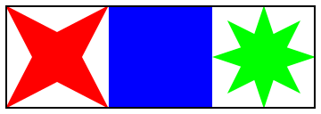

B —
Due Tuesday, 23 January 2024, 10:00am
Motivation Dealing with geometric ideas, such as the map of The Q Game, needs visualization support. So let’s explore our chosen TAHBPL before we get too deep into the project and it is too late to switch.
Purpose to explore the GUI libraries of the chosen programming language; to figure out command-line arguments; to deliver software as specified
Delivery You must deliver xgui in a directory called B in your repository.
All auxiliary files must be put into a sub-directory called B/Other/.
Well-formed and Valid You may assume that all inputs to your test harnesses from STDIN are well-formed and valid. A well-formed piece of JSON satisfies the grammar; such a piece is valid if it also satisfies all the side constraints of a schema specification.
For example, if the input stream contains the following JSON array
[ |
"file is:", |
"1b2.png", |
{ |
"color": "red", |
"shape": "star" |
}, |
{ |
"color": "blue", |
"shape": "square" |
}, |
{ |
"color": "green", |
"shape": "8star" |
} |
] |
the program would save the following image in "1b2.png"
 |
Your program’s rendering of the various shapes and colors must be such that a user of xgui can easily correlate the visual appearances with the specification. Otherwise you may use your imagination.
Optional If given "–show" on the command line, your program also opens a window, renders the shape in the window, and waits for a mouse click. When the mouse button is down, the program continues with writing the file and signals the end of processing this element. A STDIN stream with three arrays would thus open three windows.
You will want to run xgui with "–show" only on your own
development laptop, because Systems has taken away the VDI machines. See
—